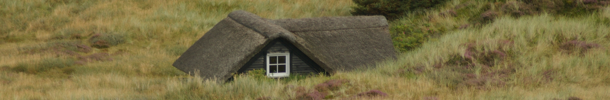
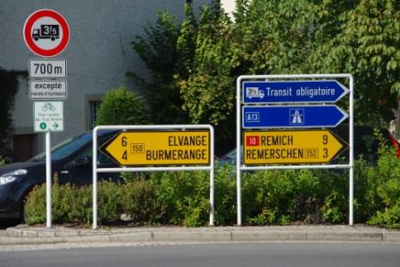
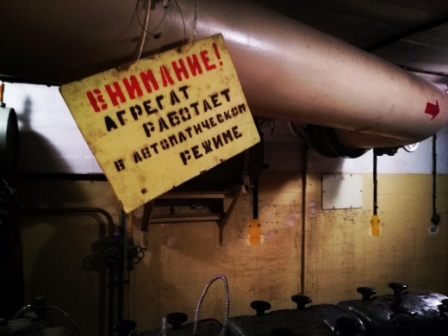
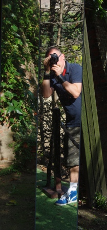

Michał Pawlikowski - zapraszam do środka

O mnie
Michał Pawlikowski, rocznik 1973.
Od urodzenia mieszka w Gdańsku, obecnie pracownik samorządowy. Zamarzyła mu się zmiana w życiu zawodowym,
wymarzony nowy zawód - front end developer. Obecnie zdobywa wiedzę w zakresie HTML5, CSS i JavaScript.
Miłośnik przyrody, potrafi cieszyć się z małych rzeczy, nałogowo pije herbatę i kawę oraz spożywa czekoladę.
Dużo, choć to pojęcie względne, podróżuje - lubi wyprawy samochodowe, kolejowe, rowerowe i morskie. Ale
nawet zwiedzanie obcego miasta tramwajem sprawia mu frajdę :)
W czasie wolnym chętnie chodzi do kina.
Projekty:
-
Pomocnik zakupowy

Obecnie realizowane zadanie zespołowe. Koty pomagają w zakupach!
Pomocnik zakupowy -
Podróże małe i duże
Opowiadam o swoich podróżach. Gdzie byłem, co widziałem, co warto zobaczyć a czego nie warto ;)
-
projectX
Projekt tak tajemniczy, że sam nie wiem czego dotyczy. Ale jak się dowiem to Wam powiem.
-
projektY
To będzie kolejna... tajemnica.
-
greenProject
Rzecz o roślinach.